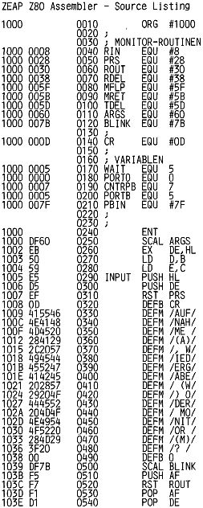

Nascom Journal |
Juli/August 1982 · Ausgabe 7/8 |
Mit diesem recht einfachen Programm ist es moeglich, einem Nascom deutlich verstaendliche Worte zu entlocken. Auf meinem Rechner laeuft eine Version, die Pruefsummen oder ganze Speicherbereiche „vorliest“. Wer schon einmal laengere Maschinenprogramme nach dem Eintippen auf Fehler ueberprueft hat, wird einschaetzen koennen, welche Erleichterung es bedeutet, nicht mit einem Finger auf dem Listing und dem anderen auf dem Bildschirm Hex-Werte vergleichen zu muessen. Als Wortspeicher fuer die Zahlen 0-F muss man allerdings etwa 12 kByte rechnen. Aber auch andere nicht weniger interessante Anwendungen lassen sich vorstellen.
Wer also seinem Nascom das Sprechen beibringen will, geht wie folgt vor:
Jedes Wort, das der Rechner „koennen“ soll, muss ihm zuerst „vorgesagt“ werden. Dabei muss die digitalisierte Sprache an Bit 0/Port B anliegen. Dazu wird der Ausgang des Recorders, der die gewuenschten Laute von Cassette abspielt, oder des Verstaerkers, an den ein Mikrofon angeschlossen ist, mit TP 9 (Cass. In) verbunden. Dann ist noch eine Verbindung von TP 19 (Cass. Schmitt) zu Bit 0/Port B herzustellen. Auf keinen Fall darf vergessen werden, BSTROBE auf Masse zu legen, sonst funktioniert die Eingabe nicht. Schliesslich muss noch ein Verstaerker an Bit 5/Port 0 angeschlossen werden. Das war dann schon der ganze Hardware-Aufwand.
Das Synthese-Programm wird gestartet durch „E 1000 BegAdr EndAdr“. Dabei ist BegAdr die erste Speicherstelle, die als Wortspeicher verwendet werden darf und EndAdr die erste, die nicht mehr zu benutzen ist. Nun kann „M“ fuer Ruecksprung zum Monitor, „A“ fuer Aufnahme und „W“ fuer Wiedergabe gedrueckt werden. Solange der Computer digitalisierte Laute abspeichert, leuchtet die Cassrec.-LED auf; ist der gesamte vorgegebene Speicherbereich belegt, erlischt sie, und bevor wieder eine Eingabe moeglich ist, gibt eine Warteschleife 2 sec. Zeit, Cassettenrecorder oder Mikrofon abzuschalten, um den „Schmutzeffekt“ zu vermeiden. Wird dann „W“ getippt, kann man sich das Ergebnis sofort anhoeren.
Die beiden Unterprogramme „record“ und „talk“, der „Kern“ des Synthese-Programms, kann natuerlich auch in anderen Anwendungen benutzt werden.Das Register HL muss dann BegAdr, und DE EndAdr enthalten, BC und AF werden veraendert. Man sollte uebrigens nicht versuchen, Bit 7/Port 0 fuer die Eingabe zu verwenden; das klingt nicht besonders. Die beiden scheinbar ueberfluessigen Befehle „neg“ und „or a“ passen die Aufnahmegeschwindigkeit der der Wiedergabe an. Die Verzoegerung „WAIT“ stellt einen Kompromiss zwischen Sprachqualitaet und -Speicherbedarf dar. Sie ist fuer 4 MHz ausgelegt und kann versuchsweise veraendert werden.
| Seite 16 von 60 |
|---|